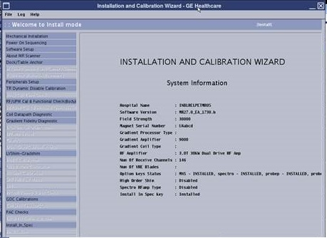

Running Installation and Calibration Wizard (ICW) Installation mode
The Installation and Calibration Wizard (ICW) provides an interface to navigate through required system procedures, checks, and calibrations.
Prerequisites
Personnel requirements
Required persons
Preliminary requirements
Procedure
Finalization
1
-
Varies
-
Required conditions
Make sure all customer-purchased options are installed before running ICW. Any options added after running ICW will not be shown.
A service key is required to launch the Installation and Calibration Wizard.
About this task
ICW Installation mode is run in Root mode.Figure 1. ICW Install mode screen

The left pane lists all tasks required to complete the installation.
Tasks must generally be completed in order, from top to bottom (tasks with prerequisites are grayed out until all prerequisites are completed). Non-grayed out tasks may be completed in any order or in parallel.
After a task is completed, click Check Status in the right pane. Completed tasks turn blue; failed tasks turn red.
ICW remains in installation mode until all tasks are successfully completed.
Note
When running ICW, the calibration tools are launched and finalized from within the ICW interface. Figure 2. ICW calibration tool interface
When running these tools within ICW, some of the finalization tasks such as Doing a TPS reset or Saving information will be automatically completed by ICW.
Procedure
Before opening ICW for the first time, make sure all options purchased by the customer are installed.
Note
The option key check is only done the first time the tool is used. Any change to the option key status after ICW has started will not be shown.
From the Common Service Desktop select Calibrations > Installation and Calibration Wizard.
Use the following tables as a reference to identify what tasks are needed to complete each procedure within ICW.
Note Relaunching a completed task in ICW opens a dialog showing prerequisite tasks. You may want to rerun the prerequisites listed before rerunning the selected task.
Table 1. ICW checks and procedures
Procedure
Tasks
Power On Sequencing
Acknowledge that the following tasks have been completed:
Is dock anchor installation compliance with Preinstallation Manual (PIM) checked (two-part anchor, allowing dock to slide forward without being lifted)?
Is dock centering completed?
Magnet Ramping and Shimming
Refer to the applicable Magnet and Cryogen Manual for the specific procedures required for these items.
Magnet pre-ramp requirements completed: Ramping Magnet to Field
Magnet rundown unit functional check completed: Magnet Rundown Unit (MRU) Checks
Magnet ramping completed: Ramping Magnet to Field
Passive shim completed: Shimming
Body Coil Tune Check
Body coil tuning check completed.
Coil Datapath Diagnostic
See Doing the coil datapath diagnostic.
Table Installation/Adjustments
Note All adjustments are iterative. If one adjustment is made, make sure that other adjustments have not been compromised. Measurements must be entered in the ICW dialog.
With the release of DV25, actual measurements must be entered in the ICW dialog. Click on the Help option to the right of the task to bring up the associated service documentation.
Follow the table adjustment process as it is presented in the ICW dialog. Enter measurement data where it applies. Click on the Help option to the right of the task to bring up the associated service documentation.
For each coil the customer has purchased, do necessary installation steps and run the appropriate SNR or MCQA test. See 1.5T Coil Vendor Manuals
for the test procedures.
Make sure that each coil the customer has purchased has been plugged into the scanner at least once.
Note When building a protocol, only commonly purchased coils are shown by default. When a coil is plugged in for the first time, the system automatically shows the coil. If the customer wants to hide one of the commonly purchased coils because they did not purchase the coil, use the “hide” coil function available in the Coil Packages tab of Coil Database Explorer.
Generating the System in Spec (IIS) Authentication Key.
Click Click here to start the tool. If failures are observed, do necessary cals, repeat check, and click Check Status once passed.
Note The next reboot after the successful completion of Install In Spec will require the customer to set up the OS pass and EA3 admin user passwords. Please make sure that the customer Admin or lead technician is available to set up the user accounts and passwords.
Note After clicking Check Status, a SaveInfo prompt is shown (if all preceding steps have been successfully completed). Do a SaveInfo (see Saving information).
Table 3. ICW finalization procedures
Procedure
Tasks
Finalization
ICW Finalization
RSvP checkout completed: InSite/IIP or InSite Remote Service Platform (RSvP)
Magnet pressure control functional check
Magnet monitor checkout
SaveInfo done
Product locator data entered into GIB
Applicable Service Licenses generated and installed on system (see Service licensing)